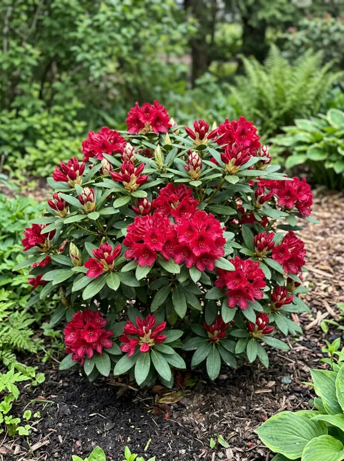
Nova Zembla
Bloeit mei – juni
vanaf€ 2950 tot 180 cm, met kluit
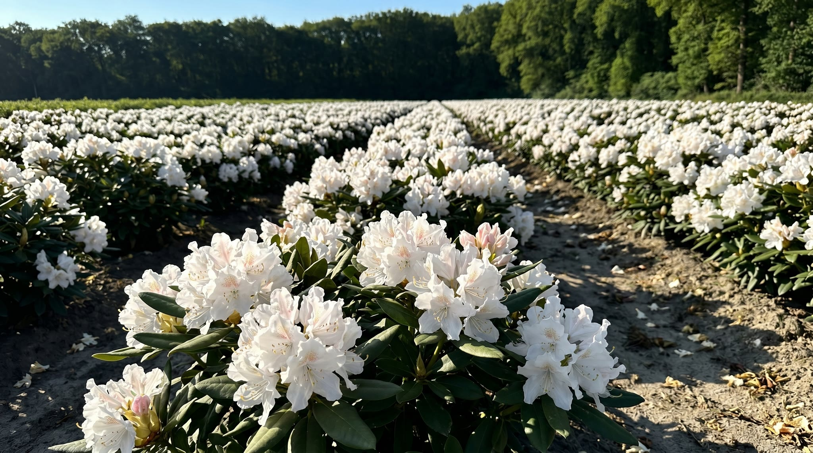
Rechtstreeks van onze familiekwekerij in Otterlo, sinds 2001.
Onze rhododendrons groeien in de volle grond op veenrijke bodem: de basis om in uw tuin goed aan te slaan.
Wij stemmen bezorging of afhaal af op uw planning en rooien uw planten pas vlak daarvoor, met kluit.
Wij bezorgen met eigen transport door heel Nederland. Of kies uw planten zelf uit in Otterlo, ook zonder afspraak.
Van 40 tot 225 cm, afhankelijk van de soort. U bestelt vanaf 1 plant.

Bloeit mei – juni
vanaf€ 2950 tot 180 cm, met kluit
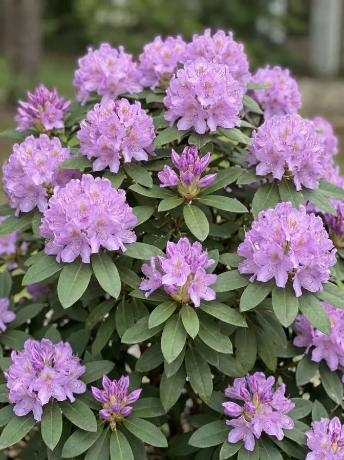
Bloeit mei – juni
vanaf€ 2950 tot 225 cm, met kluit
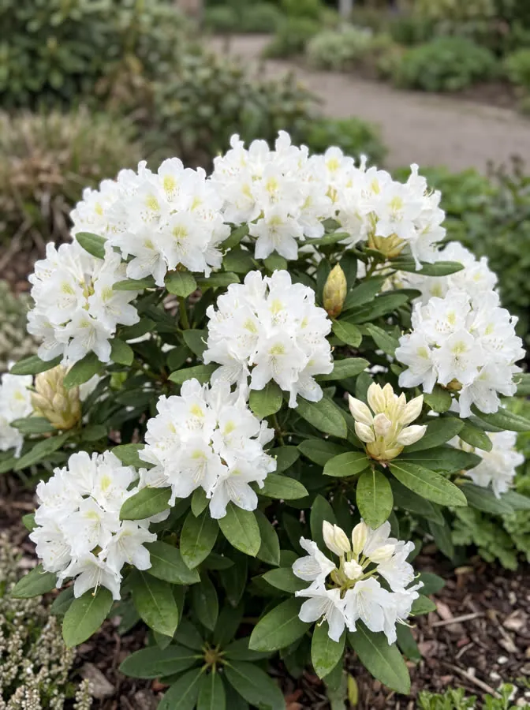
Bloeit april – mei
vanaf€ 2550 tot 225 cm, met kluit
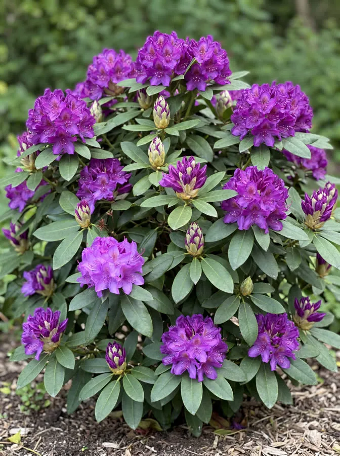
Bloeit mei – juni
vanaf€ 2740 tot 180 cm, met kluit
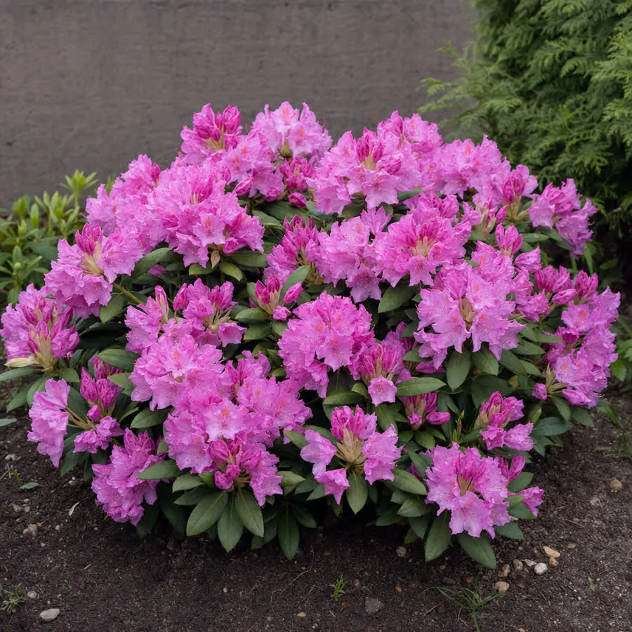
Bloeit mei – juni
vanaf€ 2750 tot 225 cm, met kluit
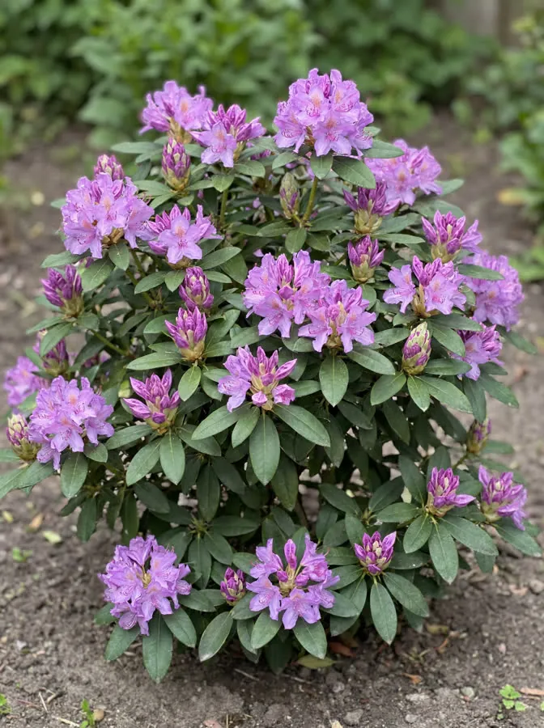
Bloeit mei – juni
vanaf€ 2250 tot 120 cm, met kluit
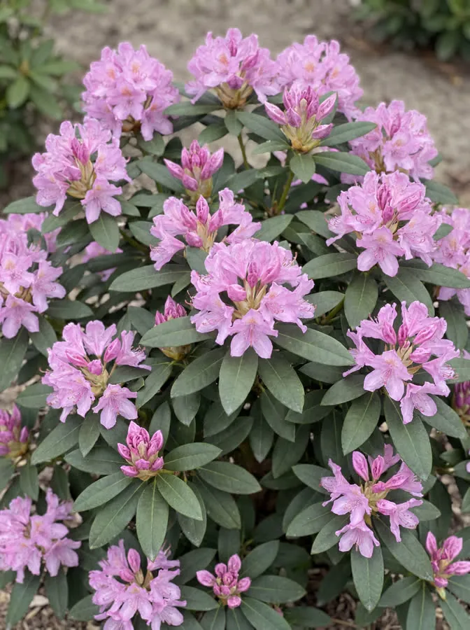
Bloeit mei – juni
vanaf€ 2240 tot 160 cm, met kluit
Van 1 tot 200 meter, ook halve meters.
Afmetingen van de border
= m²
Elke maat van 1 tot 50 meter, ook halve meters.
,
: . Dichter planten sluit sneller.
Exclusief bezorgkosten; die ziet u vóór u betaalt.
Grotere maten, tot 225 cm? Vraag een prijs aan via WhatsApp of bel 06 20 10 43 12.
Van 1 tot 200 meter, ook halve meters.
Afmetingen van de border
= m²
Elke maat van 1 tot 50 meter, ook halve meters.
,
Grotere maten, tot 225 cm? Vraag een prijs aan via WhatsApp of bel 06 20 10 43 12.
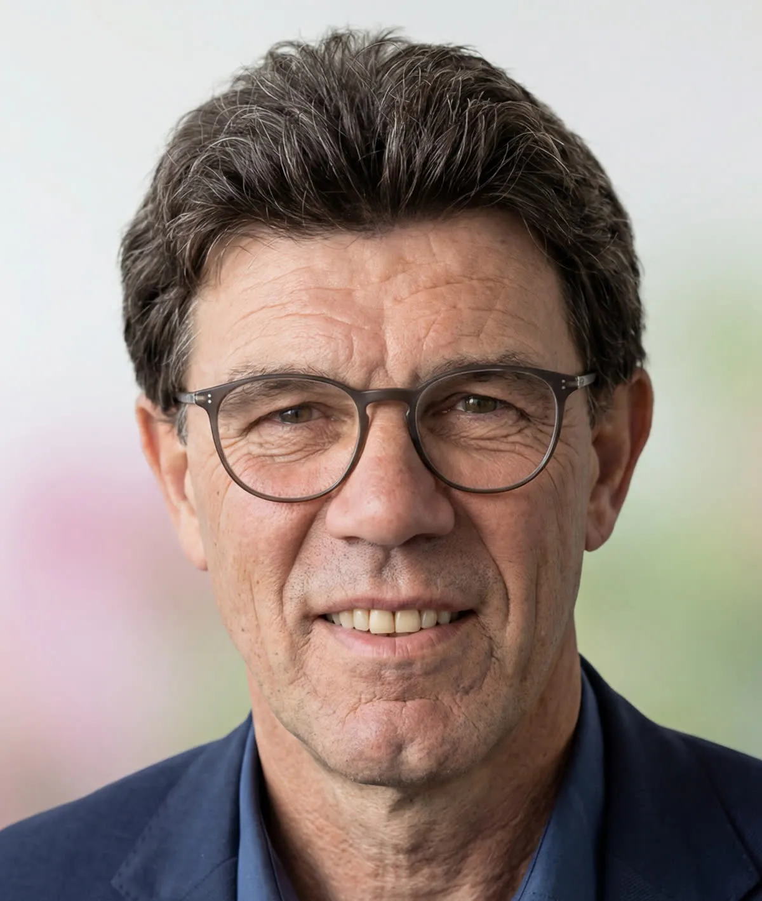
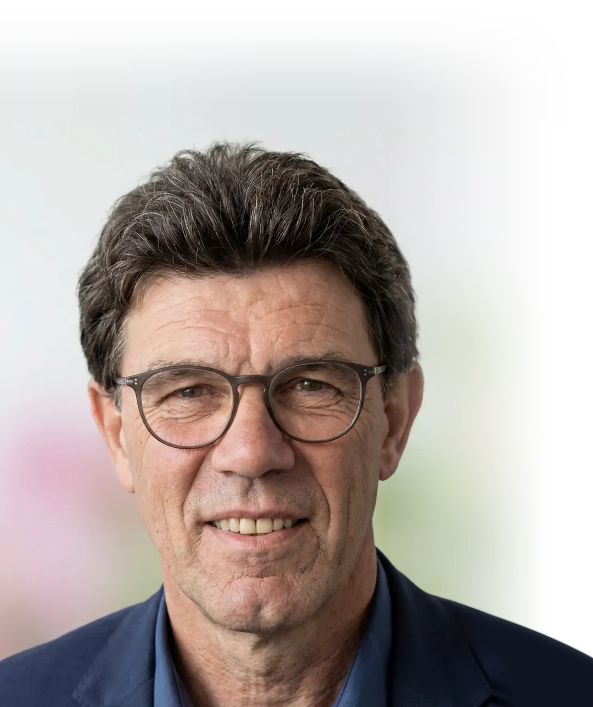
3 maanden aangroeigarantie na levering. Dezelfde soort en maat, kosteloos bezorgd of klaargezet in Otterlo. De oorzaak hoeft u niet aan te tonen: een paar foto’s volstaan. Lees de voorwaarden
Vragen over soort of garantie? Bel of app met Gert Top, oprichter en kweker, of met zijn team:
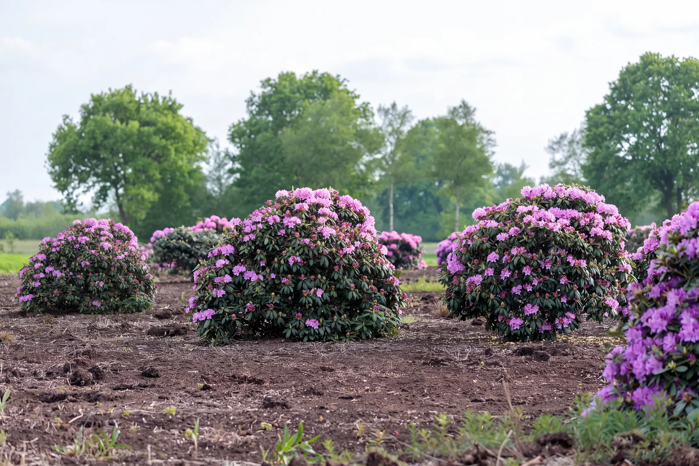
Soort, maat en aantal. Bij elke soort staan alle maten met hun prijs.
Online of per telefoon. U betaalt met iDEAL, per overschrijving of bij ontvangst; zakelijk op factuur.
Samen kiezen we de dag van bezorgen of afhalen, wanneer het u uitkomt.
Bezorgd of afgehaald. De bezorgkosten hangen af van afstand en aantal; u ziet ze vóór u betaalt.
Afhalen: Apeldoornseweg, Wekerom